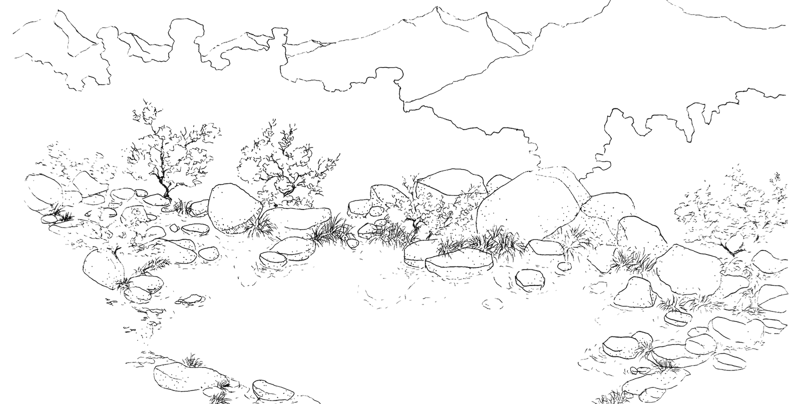
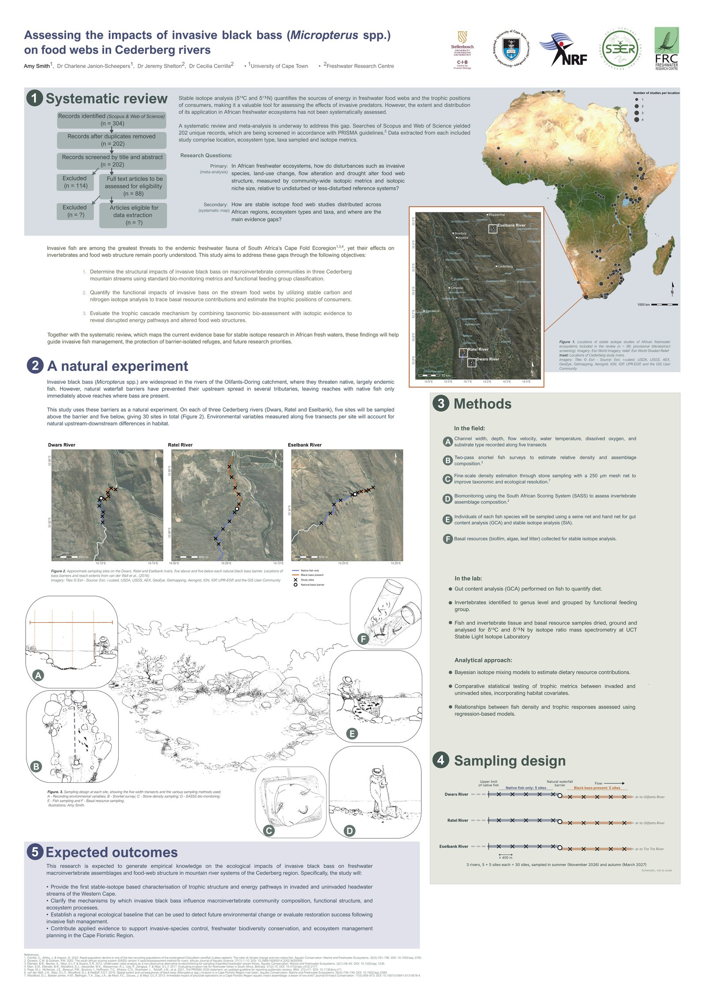

Tap the poster to zoom in. Illustrations by Amy Smith.
Invasive black bass (Micropterus spp.) are widespread in the rivers of the Olifants-Doring catchment, where they pose a serious threat to native and largely endemic fish. In several tributaries, natural waterfall barriers have halted their upstream spread, so reaches holding only native fish lie directly above reaches where bass are present.
This study uses those barriers as a natural experiment. On each of the Dwars, Ratel and Eselbank rivers, five sites are sampled above the barrier and five below (30 sites in total). By combining bio-monitoring (SASS5), gut content analysis and stable isotopes (δ¹³C and δ¹⁵N), it asks how bass change invertebrate communities, energy pathways and the overall shape of stream food webs.
Alongside the fieldwork, a systematic review maps how stable isotope analysis has been used to study African freshwater food webs, showing where the evidence is concentrated and where the gaps still are.
charlene.janion-scheepers@uct.ac.zajeremy@frcsa.org.zaceci@frcsa.org.zaFunded by the National Research Foundation (NRF). Presented at the National Symposium on Biological Invasions 2026.